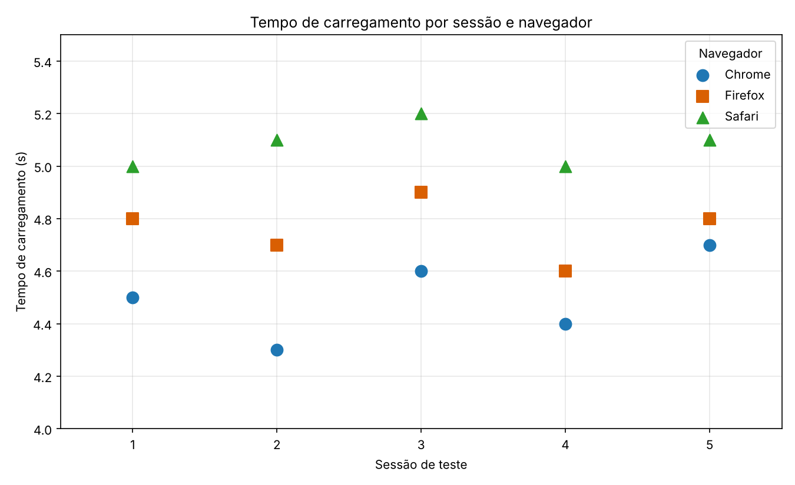

Tempo de carregamento de uma página web por navegador
Aluno(a):
[Evellin Ruth Machado Oliveira]
Matrícula:
[2556180001]
Disciplina:
[Probabilidade e Estatística]
Data:
08/11/2026
Dados (segundos)
Sessão
Chrome
Firefox
Safari
1
4,5
4,8
5,0
2
4,3
4,7
5,1
3
4,6
4,9
5,2
4
4,4
4,6
5,0
5
4,7
4,8
5,1
Gráfico de dispersão

Conclusão
Navegador
Média (s)
Amplitude (s)
Desvio-padrão (s)
Chrome
4,50
0,4
0,16
Firefox
4,76
0,3
0,11
Safari
5,08
0,2
0,08